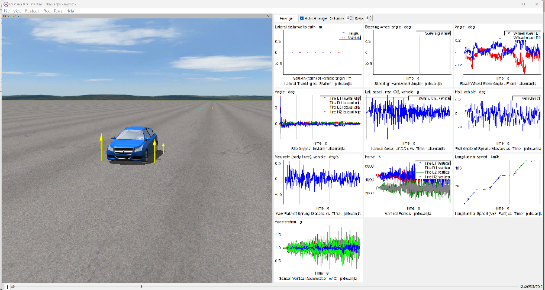
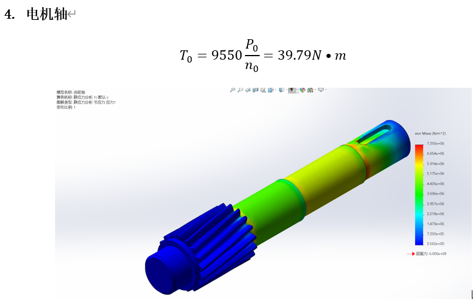
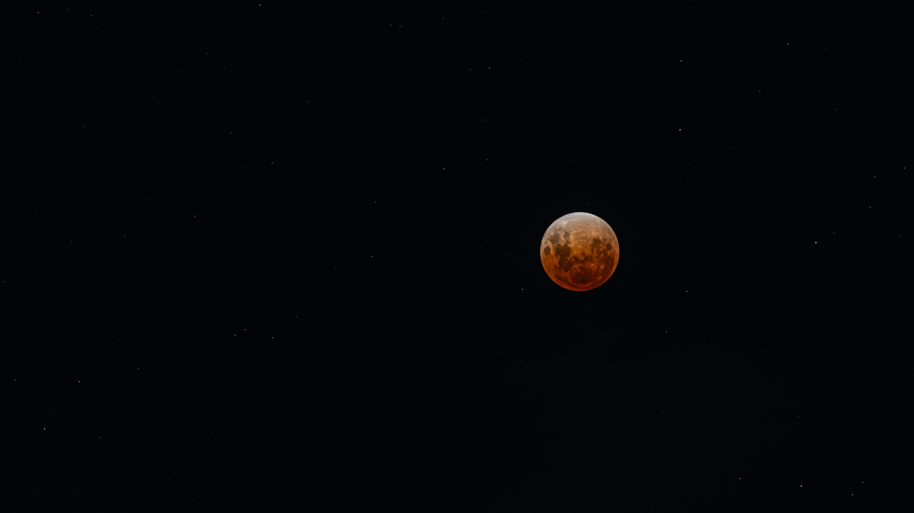
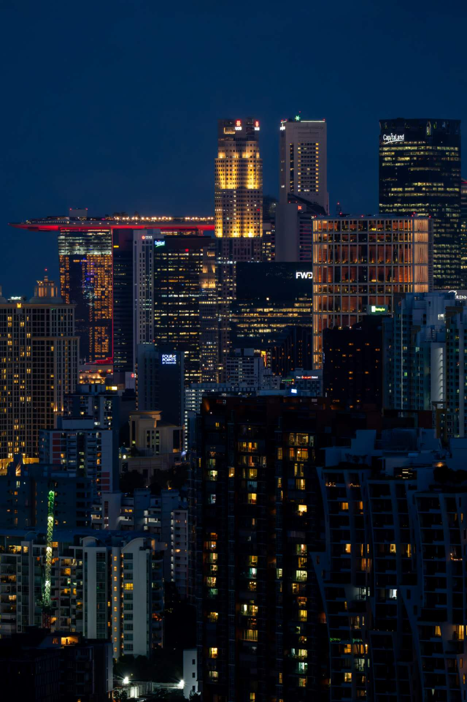
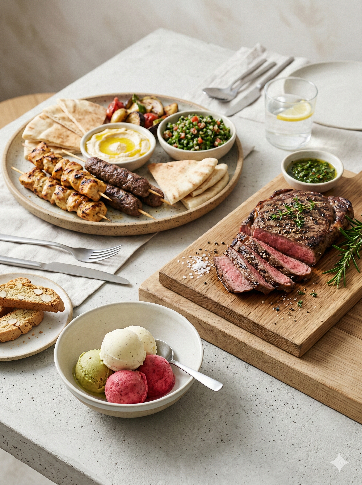

Engineering Precision.
Visual Mastery.
工程的精度。
视觉的造诣。
USYD Mechanical Engineering. Specialist in 7-DOF Vehicle Dynamics & GA-PID Control. 悉尼大学机械工程。专注于七自由度动力学仿真、遗传算法控制优化及 500px 签约商业摄影。
Expert in translating complex physics into robust engineering solutions via MATLAB/Simulink and ADAMS. 精通利用 MATLAB/Simulink 和 ADAMS 将复杂的物理系统转化为稳健的工程算法。
As a 500px contracted photographer, I bridge technical rigor with visual aesthetics through high-end technical visualizations. 作为 500px 签约摄影师，我致力于在工程严谨性与美学感召力之间建立直观的视觉联系。
7-DOF Suspension

58.7% RMS Reduction
Optimization of semi-active suspension via GA-PID control. 通过遗传算法优化的 PID 策略，大幅提升车辆行驶平顺性。
Mechanism Design

774 Component Assembly
Full SolidWorks assembly and FEA stress analysis verification. 基于 SolidWorks 的全比例装配及有限元应力动态验证。
Nature & Urban


Neural Synthesis
AI-assisted visual experimentation.

NeuralLet's talk.
Location
Sydney, NSW // Australia
+86 139 5530 0913